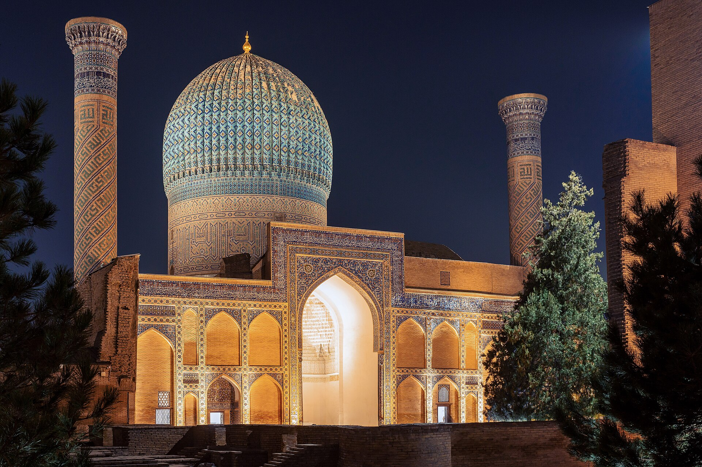

FIDE Elects Its President in Samarkand: Three Tickets and ~200 Federation Votes
The vote falls on 26 September at the FIDE General Assembly held alongside the 46th Chess Olympiad. Incumbent Arkady Dvorkovich suspended his powers in July after EU sanctions.

On 26 September 2026 the General Assembly of the International Chess Federation (FIDE) will elect a new president in Samarkand. The vote takes place within the 97th FIDE Congress (19–28 September), held alongside the 46th Chess Olympiad.
Each member national federation holds one vote. FIDE has roughly 200 member federations.
Three presidential tickets
According to FIDE, three presidential tickets are standing:
- Jan Henric Buettner — with Malcolm Pein for deputy president
- Wadim Rosenstein — with Gordon Tang
- Timur Turlov — with Viswanathan Anand
Timur Turlov is the founder and CEO of Freedom Holding Corp and head of the Kazakhstan Chess Federation. Wadim Rosenstein is the delegate of the German Chess Federation. Jan Henric Buettner is an entrepreneur with a background in telecommunications, internet technology and venture capital.
A presidential debate with all three candidates was held on Chess.com on 9 September.
Why a new president is being elected
Incumbent FIDE president Arkady Dvorkovich was added to the European Union's 21st sanctions package against Russia in July 2026. He then announced that he was voluntarily suspending his powers and duties.
In his statement Dvorkovich called the decision "unlawful and unfair" and said he would challenge it by all possible means.
Under the FIDE Statutes the deputy president assumes the president's duties. Viswanathan Anand — the 15th world champion and FIDE deputy president since 2022 — therefore became acting president.
Anand addressed the Olympiad opening ceremony in Samarkand on 15 September as acting president. The official part of the ceremony was opened by Uzbekistan's Prime Minister Abdulla Aripov, who read out a message from President Shavkat Mirziyoyev to the participants.
Turlov's platform
Speaking to The Times of Central Asia, Turlov said he plans to expand the experience of putting chess into school curricula.
I want to see chess become a truly global phenomenon.
— Timur Turlov, FIDE presidential candidate, head of the Kazakhstan Chess Federation (The Times of Central Asia, 17.09.2026)
According to the outlet, chess is taught as a school subject in 1,500 schools in Kazakhstan this academic year, with 2,500 planned for next year. More than 5,000 people took part in the country's "Senate Open Championship".
Chess is one way for people to develop relationships and grow in virtue.
— Timur Turlov, FIDE presidential candidate (The Times of Central Asia, 17.09.2026)
By the numbers
- Election: 26 September 2026, Samarkand
- 97th FIDE Congress: 19–28 September 2026
- Voting federations: about 200 (one vote each)
- Presidential tickets: 3
- Presidential debate: 9 September 2026 (Chess.com)
- Dvorkovich suspended his powers: July 2026
- Olympiad: 15–27 September 2026, 400 teams, 1,980 players
The Olympiad backdrop
The 46th Chess Olympiad runs from 15 to 27 September in Samarkand at the Silk Road International Exhibition Centre. FIDE reports 400 teams taking part: 208 in the open section and 192 in the women's.
That is the highest figure in Olympiad history; the previous record was 380 teams in Budapest in 2024. The Olympiad for People with Disabilities has 41 teams.
In the open section the United States is top seed with an average rating of 2753, India second on 2735 and Uzbekistan third on 2720. The event is played over 11 rounds under the Swiss system.
How the election works
The FIDE president is elected for four years. Candidates register as a "ticket": the presidential candidate announces their deputy president and board slate in advance.
Voting takes place at the General Assembly. Results will be known after 26 September, when the new board is also formed.